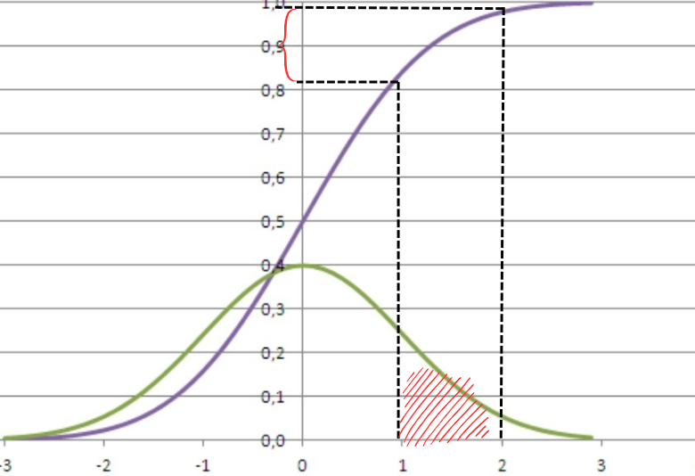

Үздіксіз кездейсоқ шама
Кездейсоқ шама тек қана дискретті, яғни санауға болатын емес, үздіксіз де бола алады. Мысалға бета-үлестірім модельдейтін - ықтималдықты, немесе уақытты келтіруге болады. Иә, ықтималдықтың өзі де кездейсоқ шама болып, ықтималдықтың ықтималдығын табуға болады, алайда бұл жағдайдағы негізгі проблема - ықтималдық үздіксіз кездейсоқ шама болып табылады, яғни ол 0 мен 1 арасындағы кез-келген мәнді қабылдай алады. 0 мен 1 арасындағы сандардың саны шексіз болғандықтан, кездейсоқ шама қабылдай алатын мәндер саны шексіз, демек кездейсоқ шаманың белгілі бір жалғыз мән қабылдау ықтималдығы нөлге ұмтылады (ең оңай мысал ретінде біркелкі үлестірім алынсын, біркелкі үлестірімде кездейсоқ шаманың әрбір шаманы қабылдау ықтималдығы бір-біріне тең, демек әрбір шаманы қабылдау ықтималдығы 1/n, бұл жердегі n-кездейсоқ шама қабылдай алатын мәндер саны. Егер n шексіздікке ұмтылатын болса, кездейсоқ шаманың әрбір мәнді қабылдау ықтималдығы 0-ге ұмтылады). Демек, мұндай кездейсоқ шаманың ықтималдық функциясын табу мүкін емес, себебі ол жай ғана нөлге үмтылатын сызық болып шығады, бұл ешқандай ақпарат бере алмайды.
Үздіксіз кездейсоқ шаманың үлестірім функциясы
Дегенмен, үздіксіз кездейсоқ шаманың үлестірім функциясын табуға болады және бұл жағдайдайда парадокс болмайды. Дискретті үлестірім функциясы бойынша тек P(X≤x) ғана емес, P(X=x) табуға болады: i - кездейсоқ Х шамасы қабылдай алатын х мәндерінің реттілігін білдіреді деп есептелінсе,
P(X=xi) = P(X≤xi) - P(X≤xi-1) => f(xi) =
F(xi) - F(xi-1). Яғни, егер ықтималдықтар
элементтері бар жиындар үшін табылатын болса: P{xi} = P{x1, x2,
...xi-1, xi} - P{x1,x2,...xi-1}.
Осы жиындарға қарай отырып мынадай теңдік құрастыруға болады: P(xi≤X≤xj) =
P(X≤xj) - P(X≤xi-1), -> P(xi≤X≤xj) =
FX(xj)-FX(xi-1) (P{xi, xi+1,..., xj}
= P{x1, x2,..., xi-1, xi,..., xj-1, xj} - P{x1, x2,..., xi-1})
Үздіксіз кездейсоқ шама үшін P(X=xi) нөлге ұмтылады, ал үздіксіз үлестірім функциясы бар болып есептелінетін болса: P(X=xi) = F(xi) - F(xi-1) ≈ 0, демек негізгі талап орындалды және үздіксіз кездейсоқ шаманың үлестірім функциясы болуы қажет, яғни үздіксіз кездейсоқ шаманың белгілі бір мәннен кіші болу ықтималдығын (және сол ықтимадықты 1-ден азайту арқылы табылатын берілген мәннен үлкен болу ықтималдығын) табуға болады. Сонымен қатар, үлестірім функциясы арқылы үздіксіз кездейсоқ шаманың белгілі бір нақты мән қабылдау ықтималдығын табу барысында ол 0-ге ұмтылса да, кездейсоқ шаманың белгілі бір интервалға түсу ықтималдығы түсінікті және пайдалы ықтималдық ретінде табыла алады: P(x(i)≤X≤x(j)) = P(X≤x(j)) - P(X≤x(i-1)) = P(X≤x(j)) - P(X≤x(i)) = F(x(j)) - F(x(i)), бұлай болатын себебі - х(і) және х(і-1) бір-біріне тең болып саналады. Мысалы, жебені шеңберге атқан кезде оның оғының центрі шексіз кішкентай нүктеге тию ықтималдығы нөлге ұмтылса да, шеңбердің белгілі бір ауданына тию ықтималдығы нақты табылады. Дәл осы сияқты ықтималдықтың 0.9 болу ықтималдығы нөлге ұмтылса да, 0.8 бен 0.9 арасындағы интервалға түсу ықтималдығын нақты табуға болады, үздіксіз кездейсоқ шаманың бір мәннен кіші/үлкен болу ықтималдығы да осы принциппен табылады.
Сонымен қатар, егер кездейсоқ шама үздіксіз болатын болса, X≤x және X<x бір мағынаны білдіретін теңсіздіктер ретінде саналады. Себебі, егер олар жиын ретінде алынса, X≤xi x1-тен xi дейінгі мәндер жиынын, ал X<xi x1-тен xi-1 дейінгі мәндер жиынын білдіреді, алайда үздіксіз кездейсоқ шамада xi-1 ≈ xi.
Үздіксіз кездейсоқ шаманың үлестірім функциясында оның негізгі талаптары дискреттікіндей орындалуға міндетті:
оң жағынан шексіз
lim(x→-∞) F(x) = 0
lim(x→∞) F(x) = 1
Ықтималдық тығыздығы функциясы
Қорытындылай келе, үздіксіз кездейсоқ шаманың ықтималдық функциясын табу мүмкін емес болса да, үлестірім функциясынан
өзге функцияны шығару мүмкін болуы қажет. Үздіксіз кездейсоқ шаманың үлестірім функциясы - шексіз кішкентай мәндерді
бір-біріне шексіз қосу деуге болады, дегенмен бұл қосындылардың мәні шексіздікке ұмтылып кетпеуі қажет, сонымен қатар
белгілі бір мәннен басталып өзге мәнмен біткен шексіз қосындылардың нақты жауабы болуы қажет, және осы талаптардың
барлығына сәйкес келетін үрдіс - интегралдау. Қарапайым тілмен, интегралдау - қисық сызықтың астындағы ауданды табу болып
табылады және талаптарға сүйенсек, сызық астындағы белгілі бір ауданды табу - шексіз кішкентай Δx пен Δf(x)
көбейтінділерінің шексіз қосындысы, алайда функцияның аргументін шектейтін болсақ, оның мәні шексіздікке ұмтыла алмайды.
Мұндай функцияны шығару үшін үздіксіз үлестірім функциясының туынды функциясын табу қажет, себебі туындының ережесі
бойынша туынды функцияның анықталмаған интегралы негізгі функцияға тең, ал анықталған - a мәнінен b мәніне дейінгі
интегралы, негізгі функцияның x=b болғандағы мәнінен x=a болғандағы
мәнінің айырмасына тең - F(x)'=f(x) -> ∫f(x)dx = F(x) -> a∫b f(x)dx = F(x=a)-F(x=b). Яғни, үлестірім функциясының ережесі бойынша,
туынды функцияның a мәнінен b мәніне дейінгі интегралы P(a<X<b)=F(x=a)-F(x=b) көрсетуі қажет, ал P(X=a) = a∫a f(x)dx = 0, себебі функция қисығының
а-дан а-ға дейінгі, яғни бір нүктенің астындағы ауданы физикалық тұрғыдан бола алмайды, демек қайтадан негізгі шарт
орындалды.
Пайда болған функция ықтималдық тығыздығы функциясы болып табылады және FX(x)'=fX(x) ->
∫fX(x) = FX(x). Яғни үздіксіз кездейсоқ шама жағдайында үлестірім функциясын табу қажет кезде
сумма интегралға ауысады. Бұл жердегі Х пен х-ке
жеке тоқталсақ: дәл ықтималдық функциясындағыдай, ықтималдық тығыздығы функциясының кездейсоқ шамасы Х, ал айнымалысы х
ретінде белгіленеді. Жалпы матматикада ықтималдық және оның тығыздығының функцияларын ажырату үшін ықтималдық тығыздығы
функциясын белгілеуде f белгісінің астына функцияның кездейсоқ шамасын жазады:
FX(x), FY(y), FT(t)
т.б., ал ықтималдық функциясының белгіленуі кездейсоқ шамасыз жүреді.

Егер суреттегідей функция бар болса (жасыл), оның а мәнінен b мәніне дейінгі интегралы
P(a≤X≤b), яғни кездейсоқ шаманың а-дан b-ға дейінгі интервалда болу ықтималдығына тең болуы қажет. Мұндай функцияның интегралы, яғни оның әрбір үздіксіз х мәнінде минус шексіздіктен
х-ке дейінгі функция сызығының астындағы ауданын көрсететін функция (∫f(x)dx = -∞∫x f(x)dx) үлестірім функциясын беретін болады.
a∫b f(x) = P(a≤X≤b) болуымен қатар, ықтималдық тығыздығы функциясының мәні - fX(x), кездейсоқ Х шамасының х мәніне тең болу ықтималдығының тығыздығын, яғни кездейсоқ шаманың х-ке жақын мәндерде қаншалықты шоғырланғанын - P(x-Δx≤X≤x+Δx) есепке алына алатындай шама болуы үшін, Δx қаншалықты кіші болу қажеттігін визуалды түрде көрсетеді:
Яғни, ықтималдық тығыздығы - үздіксіз кездейсоқ шама (бұл жерде сәтті тәжірибе жасау ықтималдығы) х-ке жақын
мәндерде қаншалықты шоғырланғанын - кездейсоқ шаманың х-ке жақын интервалда болу ықтималдығының
қаншалықты жоғары екендігін визуалды түрде көрсетеді.
Сондықтан оны кездейсоқ шаманың ықтималдығының тығыздығы деп атайды.
Ал ықтималдық тығыздығы функциясы кездейсоқ шаманың әрбір мәніндегі оның берілген мәнге тең болу ықтималдығының
тығыздығын модельдейді.
Мысалы, суреттен кездейсоқ шамалары ең жоғарғы мәніне қаншалықты жақын шоғырланғаны әртүрлі екендігі байқалатын ықтималдық тығыздығы функциялары көрсеілген, сонымен қатар осымен байланысты олардың ең жоғарғы f(x) мәндері әртүрлі, яғни кездейсоқ шама ең ықтимал х мәніне қаншалықты жақын шоғырланса, функцияның х-тегі f(x) мәні соншалықты жоғары болады. Яғни, нүктедегі мәннің айналасындағы интервал бойынша интегралдауда (айтылып кеткендей бұл арқылы ықтималдықтың осы интервал арасында болу ықтималдығы табылады) айтарлықтай мән шығу үшін қажет интервал қаншалықты тар болса, демек сол мәннің ықтималдығының тығыздығы соншалықты жоғары.
Ықтималдық тығыздығының негізгі талабы - оның кездейсоқ шаманың барлық мәндері бойынша анықталған интегралы 1-ге тең болуы қажет. Егер кездейсоқ шама толықтай шексіз болса: -∞∫∞f(x)dx = 1 = F(∞)-F(-∞), бета үлестірімдегі кездейсоқ шама 0-ден 1-ге дейін болғандықтан, ол үшін 0∫1 f(x)dx = 1 (егер ықтималдық тығыздығыны функциясының кездейсоқ шамасының қабылдай алатын мәндері шектелген болса, айнымалы кездейсоқ шама қабылдай алмайтын мәнді қабылдағанда функция мәні 0-ге тең болады, сондықтан бета-үлестірім үшін 0∫1 f(x)dx = -∞∫∞ f(x)dx = 1). Себебі кез-келген үлестірім функциясының ең үлкен аргументіндегі мәні де 1-ге тең болуы қажет. Осы талаппен жоғарыда айтылып кеткен заңдылықты түсіндіруге болады: кездейсоқ шама ең ықтимал х мәніне қаншалықты жақын шоғырланса, функцияның х-тегі f(x) мәні соншалықты жоғары болады, себебі барлық мысалдарда функция сызығының астындағы аудан бәрібір 1-ге тең болуы қажет. Үздіксіз болып табылатын және осы талапқа сәйкес келетін кез-келген функция математикалық тұрғыдан ықтималдық тығыздығы функциясы ретінде санала алады.
Жоғарыдағы мысалда айтылып кеткен ықтималдық тығыздығы ең көп шама ықтималдық тығыздығы функциясының модасы деп аталады. Ол ықтималдық функциясында да бар және онда ықтималдығы ең жоғары мәнді білдіреді. Жоғарыда айтылып кеткендей, мода - берілген ақпаратқа (м/с: бета-үлестірімде бұл болған сәтті және сәтсіз тәжірибелер саны) сүйене отырып шығарылған графикте кездейсоқ шаманың сонда ең көп шоғырланған мәні. Бета-үлестірімде бұл шама сәтті тәжірибелер санының барлық тәжірибелер санына қатынасы болып табылады. Яғни, тәжірибелердің қанша пайызы сәтті болып шықса, кездейсоқ шама ретінде алынған жалпы сәтті тәжірибе жасау ықтималдығы осы пайызға жақын мәндерде ең көп шоғырланған.